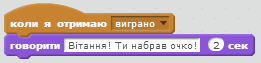

Вгадай, що це
Передмова:
На дошці з'являються випадкові об'єкти, усі вони спотворені. Гравцю необхідно здогадатись, який об'єкт демонструється, натиснувши на правильне зображення об'єкта нижче. Що швидше він здогадається, то більше очок набирає.
Крок 1: На дошці з'являються різні об'єкти.
На дошці з'являються різні об'єкти. Необхідно, щоб кілька різних зображень демонструвались на дошці.
- Створіть новий проект у Скретч та видаліть спрайт кота.
- У полі сцена оберіть Нове тло та імпортуйте зображення класної дошки з папки "У приміщенні".
- Імпортуйте новий спрайт та оберіть для нього будь-який образ. Можна обрати образ із папки "Речі".
- Розташуйте новий спрайт посередині класної дошки. Збільшіть або зменшіть його, якщо необхідно.
- Із вкладки Образи імпортуйте ще 4 образи для спрайта. Вони можуть бути якими завгодно! Тепер потрібно, щоб на дошці з'являлось випадкове зображення.
- Створіть такий скрипт:
Протестуй свій проект
Натисни на зелений прапорець.
Чи з'являється спрайт у новому образі?
Чи кожного разу змінюються образи? Іноді двічі підряд з'являється один і той же образ, але це нормально! Ви також помітите, що спрайт блимає, коли змінює образи. Ми виправимо це у наступному кроці.
Крок 2: Зображення об'єктів спотворюються.
Тепер потрібно, щоб зображення при появі було спотвореним, а через кілька секунд починало відображатись нормально.
Використаємо змінну Рахунок для контролю за ступенем спотворення зображення. Якщо рахунок великий, то спотворення значне, а зі зменшенням рахунку ступінь спотворення зменшується. Рахунок також діятиме в ролі таймера.
- У вкладці Величини створіть змінну і назвіть її Рахунок.
- Змініть скрипт таким чином:
Необхідно додати блоки "сховати" на початку скрипту і "встановити рахунок в 110" та всі блоки команд, що розташовані нижче.
Протестуй свій проект
Натисни на зелений прапорець.
Чи з'являється випадковий спотворений об'єкт?
Чи змінюються поступово ступінь спотворення?
Чи зменшується рахунок, коли ступінь спотворення зменшується?
Чи з'являється спотворений об'єкт, коли на рахунку 0?
Чи продовжують зображення об'єктів змінюватися кожного разу, коли натиснуто зелену кнопку?
Спробуйте:
Змінювати стартовий рахунок і крок зміни рахунку впродовж виконання циклу. Як це змінює вигляд об'єктів? Це спрощує чи ускладнює розпізнання об'єктів?
Використати різні графічні ефекти із випадаючого переліку. Як це змінює складність проекту?
Крок 3: Гравець впізнає зображення.
Отже, ми маємо випадкові зображення об'єктів, які повільно з'являються і рахунок, що з часом зменшується, але як виграти гру? Додамо кілька спрайтів внизу екрану, щоб гравець клікав на них. Якщо він натиснув на правильний спрайт, то виграв. Якщо ж гравець натиснув на невірний спрайт, то цей спрайт щезає, а гра продовжується.
Спершу ми повинні визначити, яка відповідь правильна.
- Створіть нову змінну і назвіть її Відповідь. Перевірте, чи її створено для всіх спрайтів.
- Змініть написаний скрипт так, щоб фіксувались правильні відповіді. Додайте блок "встановити відповідь в номер образа" одразу після першого циклу: Тепер необхідно додати в проект спрайти, на які клікає гравець при виборі відповіді.
- Продублюйте головний спрайт і перетягніть дублікат у нижній лівий кут сцени.
- Переіменуйте цей спрайт у "Відповідь 1". (Так простіше буде виконувати подальші операції з ним).
- Видаліть скрипт "Відповіді 1" та всі його образи, окрім першого.
- Повторіть ці 3 кроки знову, щоб створити спрайт " Відповідь 2" поруч зі спрайтом "Відповідь1", але для спрайту "Відповідь 2" видаліть усі образи, окрім другого.
- Таким же чином створіть спрайти "Відповідь 3", "Відповідь 4", "Відповідь 5".
Внизу сцени повинен з'явитись ряд із 5 спрайтів, кожен з яких демонструє один із образів, які може змінювати головний спрайт. Жоден із спрайтів "Відповідь" не повинен мати скриптів. - Тепер необхідно, щоб кожен спрайт відповідав на клік по ньому і діяв по-різному залежно від того, чи правильна це відповідь.
Додайте цей скрипт для спрайту "Відповідь 1": - Перетягніть цей скрипт для кожного з інших спрайтів "Відповідь", змінивши 1 на 2, 3 і т.д. відповідно до номера спрайту.
- Тепер необхідно додати команду, що відповідала б правильній відповіді. Поверніться до спрайту 1 на дошці. Додайте до його скрипту наступне: 
Протестуй свій проект
Натисніть на зелений прапорець.
Що відбувається, коли клікнути на правильну відповідь?
Що відбувається, коли клікнути на неправильну відповідь?
Що відбувається з зображенням, яке є неправильною відповіддю, коли ви починаєте нову гру?
Тестування виявило 2 проблеми. По-перше, зображення із неправильною відповіддю не з'являються знову на сцені, коли гра перезапускається. По-друге, рахунок не перестає зменшуватись, коли дається правильна відповідь.
- Для вирішення першої з цих проблем додайте такі скрипти до кожного з 5-и спрайтів "Відповідь":
- Для вирішення другої проблеми необхідно зупинити повторення циклу головного спрайту, коли гравець обирає правильну відповідь. Використайте для цього нову змінну. Присвойте їй значення 0 у момент початку гри і значення 1 у момент, коли гру виграно. Цикл "повторити поки" повинен припинити повторення, коли рахунок рівний 0 або коли змінна, що сигналізує про перемогу в грі дорівнює 1.
- Створіть нову змінну і назвіть її "Перемога?".
- Змініть скрипти таким чином:
Молодець! Створення основної гри завершено.
Однак є ще деякі речі, які можна використати у грі. Спробуй виконати ці додаткові завдання.
Бонусне завдання: Спрощення або ускладнення гри
Можна змінити рівень складності гри.
- Спробуйте змінити швидкість появи зображень та швидкість зменшення рахунку.
- Спробуйте змінити ступінь спотворення зображень.
- Спробуйте змінити зображення об'єктів, які потрібно відгадати, щоб вони стали або більш подібними або різноманітнішими. Якщо ви це зробите, не забудьте змінити спрайти-відповіді.
Бонусне завдання 2: Різне спотворення зображень у кожній грі.
Поки що у кожній з ігор використовується одне й те ж спотворення. У кроці 2 можна спробувати використати інші способи спотворення, що діють так, як і вибрані раніше колір + пікселями.
Знайдіть різні способи спотворення, які можна використати.
Змініть гру таким чином, щоб у кожній використовувався інший тип спотворення у циклі "повторити поки".
Підказка: спробуйте створити нову змінну під назвою "Спотворення". Присвойте їй випадкове значення на початку гри. Використайте блоки "якщо" у тілі циклу "повторити поки", щоб обирався відповідний тип спотворення для кожної гри.
Бонусне завдання 3: Гра з кількох раундів.
Поки що кожна з ігор самостійна. Змініть це таким чином, щоб гра тривала кілька раундів. Наприклад, нехай одна гра триває три раунди, так щоб гравець повинен був відгадати три об'єкти і міг набрати 300 очок.
Підказка: потрібна нова змінна для сумування очок за всі раунди та новий цикл для проходження через різні раунди.
Підказка: потрібно, щоб невірні відповіді знову з'являлись на початку кожного раунду. Можна скористатись блоком "оповістити" для цього.
Бонусне завдання 4: Кожен наступний раунд складніший за попередній.
Впродовж гри складність подальших раундів зростає.
Чи повинен бути однаковий рахунок у кожному раунді? Чи потрібно нараховувати більше очок за швидку відповідь у складніших раундах?
Підказка: як дізнатись, який раунд триває у конкретний момент? Як можна використати це для того, щоб змінювати рахунок і рівень складності?
Бонусне завдання 5: Гра триває, поки гравець не дасть неправильну відповідь.
Замість використання фіксованої кількості раундів, зробіть так, щоб гра продовжувалась поки, гравець не обере невірну зображення. Це доцільно лише, якщо гра ускладнюється з кожним новим раундом.
Бонусне завдання 6: Гра ускладнюється чи спрощується залежно від успішності гравця.
Заміть того, щоб постійно ускладнювати гру, краще підігнати складність гри під майстерність гравця. Якщо він швидко обирає вірне зображення, наступний раунд можна робити складнішим. І навпаки. Якщо він не знаходить правильне зображення об'єкта або знаходить його запізно, то наступний раунд стає простішим.
Цю ідею можна втілити, якщо не сумувати очки гравця за кілька раундів.
Бонусне завдання 7: Фіксація рекордної суми очок.
Можна фіксувати рекордну кількість очок, отриманих за гру. Якщо хтось набирає більше, запитувати його ім'я та оновлювати інформацію про рекордну суму очок. Переконайтесь, що інформація про гравця, який встановив рекорд, та суму його очок відображається.
Бонусне завдання 8: Очки за невірні відповіді знімаються.
Поки що жодних штрафів за швидке послідовне клікання на всі спрайти відповідей немає. Змініть гру так, щоб за кожен клік на невірну відповідь знімались очки.
Чи покращило це гру?
Збережи свій проект.